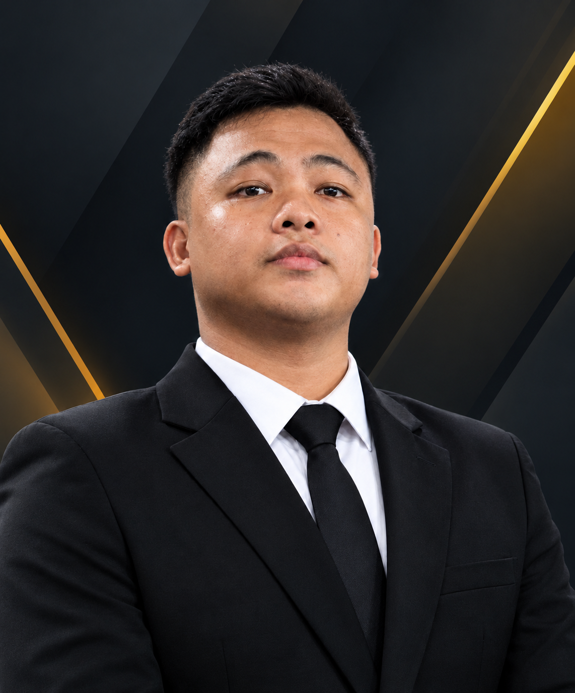

Taxi Safety
GPS location and emergency alert concepts.
BSIT STUDENT · FUTURE SYSTEMS BUILDER
I'm Henry Medrano — exploring technology that supports safer journeys, healthier habits, and more connected communities.

HMSafer transport, active living, and a more balanced lifestyle.
01 / A LITTLE ABOUT ME
I'm a BSIT student interested in practical digital tools and systems that can make daily routines safer, healthier, and easier to manage.
This portfolio introduces a concept that brings together taxi safety, fitness-life tracking, and a “Mabuhay” wellness experience in one connected platform.
02 / FEATURED CAPSTONE CONCEPT
An integrated system concept combining taxi safety support, fitness activity tracking, and wellness-oriented tools to encourage safer, healthier, and more productive daily living.
GPS location and emergency alert concepts.
Activity tracking and healthy habit support.
Wellness, balance, and daily-life tools.
Conceptual emergency reporting and vehicle location visibility.
Fitness features that encourage movement and consistent habits.
A unified experience focused on balance, usefulness, and simplicity.
A single concept that brings different daily needs into one place.
This page presents a project concept. Final features, integrations, and implementation details should be adjusted to match the actual system.
03 / SKILLS & INTERESTS
Update this toolkit to reflect Henry's actual skills and experience.
HTML, CSS, JavaScript
Requirements and workflows
Connected devices and location-aware ideas
Fitness and everyday well-being
04 / LET'S CONNECT